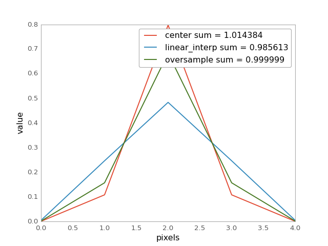

discretize_model¶
-
astropy.convolution.discretize_model(model, x_range, y_range=None, mode='center', factor=10) [edit on github][source]¶ Function to evaluate analytical model functions on a grid.
So far the function can only deal with pixel coordinates.
Parameters: model :
FittableModelor callable.Analytic model function to be discretized. Callables, which are not an instances of
FittableModelare passed tocustom_modeland then evaluated.x_range : tuple
x range in which the model is evaluated.
y_range : tuple, optional
y range in which the model is evaluated. Necessary only for 2D models.
mode : str, optional
- One of the following modes:
'center'(default)Discretize model by taking the value at the center of the bin.
'linear_interp'Discretize model by linearly interpolating between the values at the corners of the bin. For 2D models interpolation is bilinear.
'oversample'Discretize model by taking the average on an oversampled grid.
'integrate'Discretize model by integrating the model over the bin using
scipy.integrate.quad. Very slow.
factor : float or int
Factor of oversampling. Default = 10.
Returns: array :
numpy.arrayModel value array
Notes
The
oversamplemode allows to conserve the integral on a subpixel scale. Here is the example of a normalized Gaussian1D:import matplotlib.pyplot as plt import numpy as np from astropy.modeling.models import Gaussian1D from astropy.convolution.utils import discretize_model gauss_1D = Gaussian1D(1 / (0.5 * np.sqrt(2 * np.pi)), 0, 0.5) y_center = discretize_model(gauss_1D, (-2, 3), mode='center') y_corner = discretize_model(gauss_1D, (-2, 3), mode='linear_interp') y_oversample = discretize_model(gauss_1D, (-2, 3), mode='oversample') plt.plot(y_center, label='center sum = {0:3f}'.format(y_center.sum())) plt.plot(y_corner, label='linear_interp sum = {0:3f}'.format(y_corner.sum())) plt.plot(y_oversample, label='oversample sum = {0:3f}'.format(y_oversample.sum())) plt.xlabel('pixels') plt.ylabel('value') plt.legend() plt.show()
(Source code, png, hires.png, pdf)

{kind=link}
{kind=link}